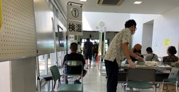

うるがいの話 ある日
最新: ワクチン接種２
うるがいとは 前提知識です
カニの画像をクリックすると『うるがいの話』サイトを表示します
うるがい(ｳﾙｶﾞｲ urugai)とは、『もずくがに』の名前でとても大きくなります。
たながー（ﾀﾅｶﾞｰtanagaa）とは手長えびのことで、何種類かあり大きいのは車 エビぐらいになります。
ぶながー(bunagaa)とは、赤い髪の毛、赤い身体、そして身長は１ｍ２０ｃｍ ぐらい、川の蟹を食べているの目撃された。場所は沖縄県国頭郡大宜味村のと ある村僕の隣近所に住んでいる爺さんから、聞いた話です。
2021年08月15日 (日）
ワクチン接種２
18:43

２度目のワクチン接種を打つ、看護婦に前回の注射は上手でしたよと言うとい
やプレッシャーをかけられた、それでは刺しますよと打たれたが、蚊に刺され
るよりも軽く殆ど刺された感じがしなかった。前回よりもさらに、上手でした
と看護婦を褒めると良かったと嬉しそうにしていた。ただ、医者も看護婦も疲
れた様子だった、大変だろうとワクチン会場を後のした。朝、ヨメの親戚にお
中元を取りに来てと頼まれ東町へ行った帰り道、９時過ぎに県庁前を通ると国
際通り入り口の前の「おきなわ屋」の場所に「コロナ検査センター」があり６
名ほど歩道に行列が出来ていた。ネットで今日から営業とあった、開店祝いの
花が両サイドに飾られていたのは、少し違和感があった。アシスト（沖縄県北
谷町）という会社らしいが、同じ名前で全国版ＩＴ企業のアシストという会社
の九州営業所の福岡イケンメン君はどうしているのだろうか。